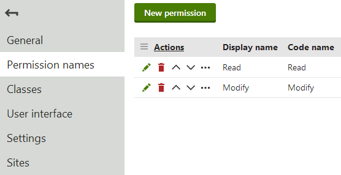
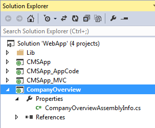
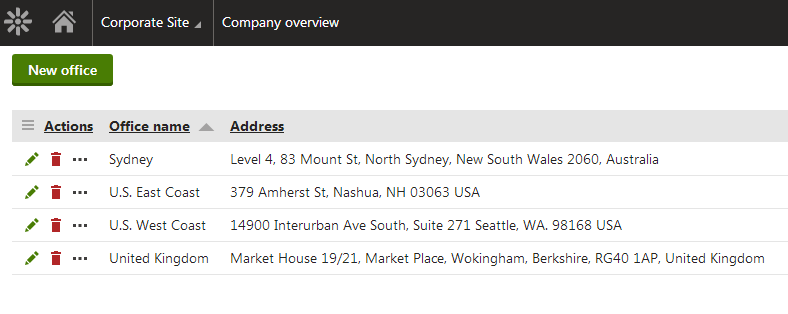

Example - Creating a packageable module
The following example demonstrates how to create a basic custom module, including all steps required to create Installation packages for the module. You can use the packages to distribute the module to other instances of Kentico. The sample module provides a "Company overview" that allows management of custom Office objects.
Important:
We strongly recommend using web application type installations for developing custom modules, so that the main Kentico project is of the same type as the module project. The example assumes that your installation is of the web application type.
It is necessary to follow all of the sections below in the presented order. Skipping steps may prevent subsequent sections from working correctly.
Start by defining the module in the Kentico administration interface:
Open the Modules application.
Click New module.
Type Company overview into the Module display name.
The system automatically uses CompanyOverview as the Module code name.
Module code names
Carefully consider the code name when creating custom modules. The name is used to identify the module's folders, files and DLL within the web project, as well as in the code names of related Kentico objects (web parts, form controls, etc.). Choose a sufficiently unique module code name to avoid collisions with the default Kentico modules or other custom modules.
Do NOT start the code names of custom modules with the cms. prefix, which is reserved for Kentico modules.
(Optional) Fill in the Module description, version and author fields. The system uses the values in the metadata of the module's Installation packages.
Click Save. The system creates the module and opens its editing interface.
Switch to the Sites tab and assign the module to your sites.
Defining module permissions
While editing the module in the Modules application, select the Permission names tab.
Click New permission.
Type Read into the Permission display name. The permission also automatically uses Read as the code name.
Enable Display in matrix.
Click Save.
Return to the list of permissions and click New permission again.
Type Modify into the Permission display name.
Enable Display in matrix.
Click Save.
Read and Modify are standard permissions that the system checks automatically for various purposes, including access of the module's user interface and editing of the module's objects.
We recommend defining the Read and Modify permissions for all custom modules that have their own user interface and data. Without the permissions, only users with the Global administrator privilege level can edit objects that belong to the module.

Creating the Read and Modify permissions for a custom module
Creating the module project
To allow the creation of Installation packages for the module, you need to integrate a new web application project into your Kentico solution.
Open Visual Studio and create a new web application project.
Select the ASP.NET Web Application project template (Empty).
Name the project CompanyOverview (the project name must match the module's code name).
Delete the project's Web.config file.
If the project contains a packages.config file, rename it to packages.CompanyOverview.config.
Expand the project's Properties folder and rename the AssemblyInfo.cs file to CompanyOverviewAssemblyInfo.cs.
Save the project.
Open the CompanyOverview project's folder on your file system.
Copy CompanyOverview.csproj and packages.CompanyOverview.config (if present) to the CMS folder of your Kentico web project.
Copy CompanyOverviewAssemblyInfo.cs from the project's Properties directory to the CMS\Properties folder of your Kentico web project.
Add the CompanyOverview project to your Kentico project's solution:
Open your Kentico solution in Visual Studio (using the WebApp.sln file).
In the Solution Explorer, right-click the Kentico solution and choose Add -> Existing Project.
Select CompanyOverview.csproj in the project's CMS folder.
Add the required references between the projects:
Right-click the CompanyOverview project and select Add -> Reference.
Open the Browse tab of the Reference manager dialog, click Browse and navigate to the Lib folder of your Kentico web project.
Add references to the following libraries (and any others that you require for custom code):
CMS.Base.dll
CMS.Core.dll
CMS.DataEngine.dll
CMS.Helpers.dll
Expand the Properties folder of the CompanyOverview project and edit CompanyOverviewAssemblyInfo.cs.
Add the AssemblyDiscoverable assembly attribute:
usingCMS;[assembly:AssemblyDiscoverable]Save the solution and all files.
The Kentico solution now contains a web application project representing the Company overview custom module. The additional project will only exist on the Kentico instance that you use to develop the module. When you install the module on a different instance, all code is already compiled inside the module's DLL and other files are integrated into the main Kentico project.

CompanyOverview web application project representing a custom module in the Kentico solution
Adding classes to modules
Module classes represent objects in Kentico. The classes serve as containers for configuration such as data fields, editing form definitions, and search settings. Classes also have associated code that provides an API for manipulating the given object.
To create a custom class for the sample module:
In the Kentico administration interface, open the Modules application and edit the Company overview module.
Select the Classes tab.
Click New class.
Fill in the Class display name and Class: Office
Click Next.
In step 2, leave the default values and click Next.
Notice the Include Guid field and Include LastModified field checkboxes. If selected, the system automatically creates data fields for storing GUID identifiers and last modified timestamps. These two fields are necessary if you wish to use Staging or Export and Import functionality with objects of the given class.
See also: Enabling export and staging for the data of classes
Define the class's data fields. Click New field, set the properties, and click Save for each field:
Field name: OfficeDisplayName
Data type: Text
Required: Yes (checked)
Field caption: Display name
Form control: Text box
Field name: OfficeName
Data type: Text
Required: Yes (checked)
Unique: Yes (checked)
Field caption: Code name
Form control: Code name (select via the (more items...) option)
Field name: OfficeAddress
Data type: Text
Size: 400
Field caption: Office address
Form control: Text box
Click Next once the required fields are defined.
Click Finish to complete the creation of the class.
The system automatically creates a database table for storing the class's data.
Generating class code
The system provides a tool for automatically generating the basic code required for the API of the custom class:
Switch to the Code tab of the class.
The required system fields should automatically be mapped to the corresponding fields of the class (Display name, Code name, GUID, Last modified).
When creating your own classes, adjust the settings as necessary and click Generate code.
Change the Save path to: ~/CompanyOverview
Click Save code. The system generates Info and InfoProvider classes for the custom class.
Open the Kentico solution in Visual Studio and include the new files into the module's project:
Expand the CompanyOverview project.
Click Show all files at the top of the Solution Explorer.
Right-click the CompanyOverview folder and select Include in Project.
Build the CompanyOverview project.
The default Info and InfoProvider classes are sufficient for basic functionality, but you can extend the code to create an API for your custom class. To learn how to set the metadata of your classes in the Info code, see Setting the type information for module classes.
Adding module resource strings
Start by preparing a resource file (.resx) for the custom module:
In Visual Studio, expand the CompanyOverview project.
Click Show all files at the top of the Solution Explorer.
Right-click the CMSResources folder and select Include in Project.
Right-click the CMSResources folder and select Add -> New Folder.
Rename the new subfolder to CompanyOverview (the folder name must match the module's code name).
Right-click the CompanyOverview folder and select Add -> New Item.
Create a Resource File (template located in the Visual C# -> General folder), for example named Default.resx.
Set the resource file's Access Modifier to No code generation (to allow strings with the '.' character in their name).
(Optional) If you plan to publish your development project, set the Build Action property of the resource file to Content to ensure that it is included. When installing the module package on other instances, the Build Action of resx files is automatically set to Content.
The resource file allows you to create resource strings for your custom module. Add a string for displaying the Office class's object type name:
Edit CMSResources\CompanyOverview\Default.resx in Visual Studio.
Add a string with the following text:
Name: ObjectType.CompanyOverview_Office (the general format is ObjectType.<class code name with an underscore>)
Value: Custom office
Save the resource file.
The system uses the resource string in the administration interface, for example when selecting object types.
Building the module interface
You can use the portal engine to develop custom pages in the administration interface for your modules. The portal engine allows you to perform most of the work directly in your browser, and build UI elements out of page templates and web parts.
The following sections describe how to create a basic editing interface for the Office objects used by the sample Company overview module.
Office listing element
In the Modules application, edit the Company overview module.
Open the User interface tab.
Select the CMS -> Administration -> Custom element in the tree.
Click New element (
 ).
).Set the following properties for the element:
Display name: Company overview
Module: Company overview
Element icon type: Class
Element icon CSS class: icon-app-localization
Type: Page template
Page template: Object listing (click Select to choose the template)
Click Save.
The UI element's position in the user interface tree under the CMS -> Administration -> (Category) section identifies the new element as an application.
By default, the element only checks the Read permission of the related module, and does not have any other access restrictions. For more information about the settings of UI elements, see Reference - Managing UI elements.
The purpose of the element is to display a list of all Office objects in the system. You need to set the properties of the Object listing page template for the UI element:
Switch to the element's Properties tab.
Select Custom office (companyoverview.office) as the Object type.
Click Save.
Every listing page requires an XML grid definition, specified by the Grid definition path property. With the property empty, the system attempts to load the grid definition from the default location for the given module and object type.
For the purposes of the example, create the default.xml file in the following location:
~/App_Data/CMSModules/CompanyOverview/UI/Grids/CompanyOverview_Office/default.xml
Create the ~/App_Data/CMSModules/CompanyOverview folder in the standard file system.
Include the folder into the CompanyOverview web application project in Visual Studio (enable Show all files in the Solution Explorer if necessary).
Create the remaining subfolders and default.xml file in Visual Studio.
<?xml version="1.0" encoding="utf-8" ?><grid> <actions> <action name="edit" caption="$General.Edit$" fonticonclass="icon-edit" fonticonstyle="allow" /> <action name="#delete" caption="$General.Delete$" fonticonclass="icon-bin" fonticonstyle="critical" confirmation="$General.ConfirmDelete$" /> </actions> <columns> <column source="OfficeDisplayName" caption="Office name" wrap="false" localize="true"> <filter type="text" size="200" /> </column> <column source="OfficeAddress" caption="Address" width="100%" /> </columns> <options> <key name="DisplayFilter" value="true" /> </options></grid>The Object listing template uses the Kentico UniGrid control. To learn how to create XML definitions for object lists, see Reference - UniGrid definition.
The example above defines two basic actions for the listed objects:
edit - handled automatically for portal engine elements (the listing element must have a child element whose code name starts with the Edit keyword)
#delete - a predefined UniGrid action for deleting Kentico objects. The functionality is ensured by the default API that you generated for the Office class.
New office element
Select Company overview in the UI element tree.
Click New element (
).Set the following properties for the element:
Display name: New office
Code name: NewOffice (Important: The code name of elements for creating new objects under listings must always start with the New keyword)
Module: Company overview
Display breadcrumbs: yes (allows users to easily return to the list of offices)
Page template: New / Edit object
Click Save.
The New element allows users to create new offices from the listing page. If you switch to the Properties tab, you can see that the element automatically inherits the Object type from the parent listing page (Custom office).
Office editing element
Select Company overview in the UI element tree.
Click New element (
).Set the following properties for the element:
Display name: Edit office
Code name: EditOffice (Important: The code name of elements for editing objects under listings must always start with the Edit keyword)
Module: Company overview
Display breadcrumbs: yes (allows users to easily return to the list of offices)
Page template: New / Edit object
Click Save.
The Edit element provides the editing form used when editing offices on the listing page.
If you switch to the Properties tab you can see that the element automatically inherits the Object type from the parent listing page (Custom office).
Tip: For complex objects, you can build an editing interface with multiple tabs:
Select the Vertical tabs page template for the Edit element.
Create any number of child elements with editing forms or other required content.
The tabs element automatically generates a tab menu for the child elements. You can find an example on the Creating custom binding classes page.
The user interface of the custom module is now ready. If you refresh the administration interface header, you can find the Company overview application in the Custom category. The application displays a listing page, where you can create, edit and delete offices. Users who do not have the Global administrator privilege level can only access the list if they have the Read permission for the Company overview module, and create, edit and delete offices if they have the Modify permission.

Listing interface of the custom module's application
Initializing the module to run custom code
You can register your custom module and execute code during its initialization if you need the module to modify the behavior of the Kentico application. This approach is recommended when developing customizations directly related to the module.
Open your project in Visual Studio.
Create a new class in the module's code folder (the CompanyOverview folder under the CompanyOverview project for the sample module).
Make the module class inherit from CMS.DataEngine.Module.
Define the constructor of the module class:
Inherit from the base constructor
Enter the code name of the module as the first parameter
Set the second parameter (isInstallable) to true, which ensures that the module's initialization runs only after its database objects are successfully installed
Register the module class using the RegisterModule assembly attribute.
Implement your custom functionality inside the module class.
Save the class file and Build the module's project.
You can achieve most customizations by running code during the initialization of the module – override the following methods:
OnInit (recommended) - the system executes the code during the initialization (start) of the application. Only runs after the module's database objects are successfully installed. A typical example of OnInit code is assigning handler methods to system events.
OnPreInit - the system executes the code before OnInit. Runs even if the module's database objects are not yet installed. Does not support any operations that require access to the database, such as working with the data of modules. For example, you can use OnPreInit to register custom implementations of interfaces.
Because you cannot manually set the initialization order of modules or define dependencies between modules, we do not recommend working with the data of other modules directly inside the OnInit method. The best approach is to assign handlers to system events, and perform the actual operations inside the handler methods. For general code that is not related to a specific system event, you can use the ApplicationEvents.Initialized.Execute event, which occurs after all modules in the system are initialized.
For example, the following code extends the sample Company overview module. The example uses event handling to log an entry in the system's Event log whenever a new office is created.
Library references
You need to add references to your module project for any Kentico libraries required by your custom code. For example, the sample code below requires an additional reference to the CMS.EventLog library:
Right-click the CompanyOverview project in the Visual Studio Solution Explorer.
Select Add -> Reference.
Open the Browse tab of the Reference manager dialog, click Browse and navigate to the Lib folder of your Kentico web project.
Add a reference to CMS.EventLog.dll.
using CMS;using CMS.DataEngine;using CMS.EventLog;using CompanyOverview;[assembly: RegisterModule(typeof(CompanyOverviewModule))]namespace CompanyOverview{ public class CompanyOverviewModule : Module { // Module class constructor, inherits from the base constructor // Uses the code name of the module as the first parameter // Sets the isInstallable parameter to true, ensures that the module's initialization runs only after its database objects are installed public CompanyOverviewModule() : base("CompanyOverview", true) { } /// <summary> /// Initializes the module. Called when the application starts. /// </summary> protected override void OnInit() { base.OnInit(); // Assigns a handler to the Insert.After event for OfficeInfo objects CompanyOverview.OfficeInfo.TYPEINFO.Events.Insert.After += Office_InsertAfter; } private void Office_InsertAfter(object sender, ObjectEventArgs e) { // Logs an information entry into the system's event log whenever a new office is created string message = "New office '" + e.Object.GetStringValue("OfficeDisplayName", "") + "' was created in the Company overview module."; EventLogProvider.LogInformation("Company overview module", "NEW OFFICE", message); } }} Creating the module installation package
You can transfer the custom module to other instances of Kentico by creating installation packages. Edit the module in the Modules application and click Create installation package on the General tab. The resulting package contains the module's database objects and files, with all code compiled into a DLL.
When the package is installed on another instance of Kentico, the module automatically becomes sealed and is no longer in development mode (i.e. it is not possible to edit the module's properties, or create new classes, UI elements, permissions and settings). If you view the target instance's solution in Visual Studio, the module's web application project is not present – all code is already compiled inside the module's DLL and other files are integrated into the main Kentico project.
Note: You cannot create installation packages for the module again on instances where it is sealed. You always need to prepare the module package on the original instance where the module is in development mode.